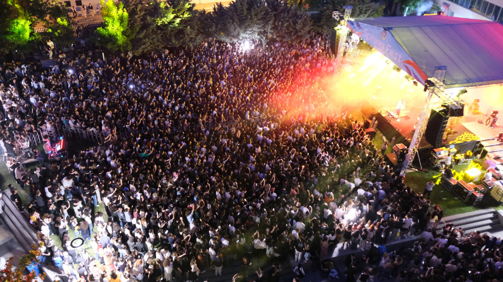

ANKARA’NIN KALBİNDE / TED ÜNİVERSİTESİ

Şehrin ortasında.
Ritmin içinde.
Ses açılır. Anılar birikir.
Bu enerjide senin de yerin var.
Birlikte yapalım
Ses açılır. Anılar birikir.
Bu enerjide senin de yerin var.